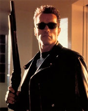
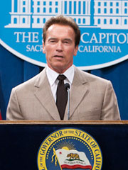

Biography
ARNOLD SCHWARZENEGGER is known all over the globe for his many accomplishments: world champion bodybuilder, Hollywood action hero, successful businessman, environmentalist, philanthropist, best-selling author, and California's 38th Governor.
This world-famous athlete and actor was born in Thal, in 1947, and by the age of 20 was
dominating the
sport of competitive bodybuilding, becoming the youngest person ever to win the Mr. Universe title. By
generating a new international audience for bodybuilding, Schwarzenegger turned himself into a sports icon.
With his sights set on Hollywood, he emigrated to America in 1968, and went on to win five Mr. Universe titles
and seven Mr. Olympia titles before retiring to dedicate himself to acting.
Later he would go
on to earn a
college degree from the University of Wisconsin and proudly became a U.S. citizen.
Actor
Schwarzenegger, who worked under the pseudonym Arnold Strong in his first feature, HERCULES in New York, quickly made a name for himself in Hollywood. In 1977, the Hollywood Foreign Press Association recognized him with a Golden Globe® for New Male Star of the Year for his role in STAY HUNGRY opposite Sally Field. His big break came in 1982 when the sword and sorcery epic, CONAN THE BARBARIAN, hit box office gold. In 1984, Schwarzenegger blew up the screen and catapulted himself into cinema history as the title character in James Cameron’s sci-fi thriller, TERMINATOR. He is the only actor to be in both categories of the American Film Institute’s Hundred Years of Heroes and Villains for roles he played in the film. To date his films have grossed over $3 billion worldwide.
Governor
As governor, he was California's most effective marketing tool, traveling across the country and around the world promoting California-grown products, cutting-edge technologies and the state's diverse travel destinations. In addition, using his background as an internationally recognized athlete, Schwarzenegger made restoring health and fitness a top priority. He signed legislation making the state's school nutrition standards the most progressive in the nation and continues to promote healthy habits by taking harmful trans fats out of California restaurants and ensuring nutritional information is available to diners. To improve classrooms across the state and ensure that all California’s students have access to the world-class education they need to grow, thrive and succeed, Schwarzenegger led the reform to make California competitive for up to $700 million in federal Race to the Top funds.
